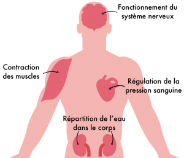

Le sel est indispensable au bon fonctionnement de l’organisme, mais sa consommation en excès favorise le développement de certaines maladies. Aujourd’hui, on en consomme plus du double de nos réels besoins ! Pourquoi un nutriment essentiel est-il devenu l’un des poisons de notre alimentation si difficile à limiter ? Voici notre réponse, rédigée avec l’aide du nutritionniste Anthony Berthou.
Un nutriment essentiel pour le corps
Le sel est un aliment dont le nom scientifique est “chlorure de sodium” : il est composé à 60% de chlorure et à 40% de sodium. Le sodium est donc l’un des minéraux constituants du sel.
Le sodium joue un rôle important pour notre organisme. Il permet le bon fonctionnement du système nerveux, en ouvrant les canaux dans lesquels passent les signaux électriques émis par les neurones. Le sodium a également un rôle sur les cellules musculaires puisqu’il permet de déclencher la contraction des muscles et du coeur.
Le sodium régule aussi l’équilibre hydrique de l’organisme, en faisant fonctionner les reins qui filtrent l’eau du corps et participent à sa répartition. Il permet de retenir l’eau à l’intérieur du corps, et ne de pas l’éliminer totalement par les urines. Il aide enfin à réguler le volume sanguin et donc de la pression artérielle.
Une consommation de 4g de sel par jour suffit pour combler les besoins d’un adulte. Et elle ne doit pas être inférieure à 2g/jour.
Les sportifs peuvent avoir un besoin supérieur. En effet, ils transpirent lors de l’effort et perdent ainsi de l’eau et du sodium par les tissus de la peau. Une carence en sodium peut alors engendrer des crampes après l’effort, de l’épuisement, une incapacité de bien se réhydrater et une diminution des performances. Cela peut être fréquent en cas d’effort de longue durée (> 4h) et de fortes transpirations s’il n’y a pas compensation de la perte en sodium par une boisson adaptée ou s’il y a un excès d’hydratation à base d’eau seule.
Un danger pour la santé consommé en excès
De nos jours, nous mangeons excessivement salé. Nous consommons en moyenne 8 à 10g/jour de sel, ce qui est bien trop élevé.
L’excès de sel favorise l’hypertension artérielle. Lorsqu’on consomme du sel, cela engendre un phénomène d’appel d’eau, un peu comme lorsque vous faites dégorger un concombre en le saupoudrant de sel : l’eau est attirée par le sel. Ainsi lorsqu’il est consommé en excès, le sel peut modifier les échanges d’eau dans l’organisme. Les vaisseaux sanguins deviennent trop chargés en eau, le volume sanguin et la pression sanguine vont donc augmenter : c’est le début de l’hypertension artérielle. L’hypertension elle-même peut favoriser à terme certaines maladies cardiaques, voire les accidents vasculaires cérébraux (AVC et anévrisme).

La consommation de sel et d’aliments salés augmente aussi le risque de cancer et d’ulcère de l’estomac. En effet, le sel contribue à attaquer et endommager la paroi de l’estomac pouvant favoriser l’infection d’une bactérie appelée Hélicobacter pylori. Elle est à l’origine d’une augmentation des risques d’ulcère et de cancer de l’estomac. Par ailleurs, le sel nitrité, qui est utilisé comme conservateur dans de nombreuses charcuteries, est un composant reconnu comme favorisant les risques de cancer colorectal.
Enfin, la surconsommation de sel peut augmenter les carences en calcium. En effet, l’excès de sel de table (chlorure de sodium) contribue à augmenter l’acidité du corps. Lorsque l’alimentation est équilibrée, l’acidité est compensée par des composés dit “alcalinisant” présent en abondance dans les fruits et légumes. Mais, si l’alimentation est déséquilibrée et que l’organisme reçoit davantage de charges acides qu’il ne peut en éliminer, il va devoir puiser dans ses propres réserves de minéraux alcalins (magnésium, potassium, etc.). Lorsque cette acidité est importante et chronique, le corps va devoir aller jusqu’à puiser dans ses réserves de sels de calcium qui se trouvent dans les os. Le calcium libre est ensuite éliminé via les urines, ce qui peut conduire à une fragilisation des os et favoriser les fractures à long terme. C’est particulièrement problématique chez les adolescents dont le capital osseux est en formation et chez les femmes après la ménopause puisque cette carence augmente les risques d’ostéoporose.
Comment limiter sa consommation de sel ?
- Limitez les aliments riches en sel : les plats préparés, chips, charcuteries, pizzas, sauces, fromages, etc… sont riches en sel.

- Trouvez des alternatives : ail, oignon, thym, ciboulette, basilic, citron, poivre, curry, paprika et autres épices sont autant d’alternatives qui donneront du goût à vos plats et permettront de varier les saveurs.
- Changez vos habitudes : goûter avant de saler, ne pas saler l’eau de cuisson, retirer la salière de la table, sont des petits réflexes simples et efficaces qui vous permettront de réduire votre consommation de sel.
- √âvitez de d√©velopper le go√ªt du sel : la pr√©f√©rence pour le sal√© n‚Äôest pas inn√©e, elle s‚Äôapprend. Limitez donc l‚Äôajout de sel dans les repas de vos enfants. Ils prendront ainsi directement de bonnes habitudes qu‚Äôils conserveront √† l’√¢ge adulte.
Bien choisir son sel de table
Le sel est puisé dans les ressources de la mer ou de la terre. Le sel de mer est extrait de manière naturelle, écologique et durable par l’évaporation de l’eau de mer dans les bassins de sel. Le sel de terre est extrait de couches de sel souterraines par des processus très énergivores qui dégradent les sous-sols. La production de sel de terre a donc une plus grande empreinte carbone et contribue bien davantage à la dégradation de l’environnement.
Le sel de mer et le sel de terre peuvent tous deux être raffinés. Le sel raffiné est traité chimiquement afin de le blanchir, de le rendre saupoudrable et d’optimiser sa conservation. Malheureusement, les minéraux comme le magnésium ainsi que les oligo-éléments qui composent le sel sont éliminés au cours de ces processus : seul subsiste le sodium. Par ailleurs, des antiagglomérants sont ajoutés dans le sel raffiné : E535 (ferrocyanure de sodium), E536 (ferrocyanure de potassium), ou encore E538 (ferrocyanure de calcium). Les antiagglomérants sont des additifs alimentaires seulement autorisés en faible dose pour le sel. Ils présentent un risque potentiel d’allergies et de contamination de métaux lourds.
A l’inverse, le sel non raffiné est le sel sortant directement de la mer ou de la terre, sans transformation ni traitement chimique. Il est généralement grisâtre et contient du sodium, du magnésium et d’autres minéraux.
Le sel est à limiter au maximum, mais privilégiez le sel marin non raffiné et vérifiez que le seul ingrédient est bien du sel. Le sel de Guérande, de Noirmoutier, de l’Ile-de-Ré, de Camargue et le sel de la Mer Morte répondent généralement à ces critères.
Le sel “pauvre en sodium”, enrichi en potassium ou en herbes aromatiques est une bonne alternative à la surconsommation de sodium. Mais il faut y surveiller l’ajout d’additifs ! Privilégiez le potassium organique (citrate de potassium) au chlorure de potassium car ce dernier contribue à acidifier l’organisme. Vous pouvez par exemple opter pour le produit K-sel de la marque Pileje (proposition faite en toute indépendance, sur recommandation d’Anthony Berthou). Le gomasio, mélange de graines de sésame broyées et de sel marin, est une autre alternative intéressante.

J’ai bien pris des choses donc je veux faire attention et bien choisir. üòÄ
La clorure de sodium et le sel sont la même chose sa je le savait déjà
,tr√®s bonne article sur la clorure de sodium et c’est tr√®s bien expliqu√© c’est vrai que aujourd’hui on mange trop de clorure de sodium, vous avez oublier il y a aussi exag√©rement de clorure de sodium dans les burgures et dans le ketchup et encore dans la mayonnaise.
Sel fin cerebos : anti-agglomerant E 535
J’ai supprim√© le sel dans les pommes de terre en utilisant que des grenailles en cuisson avec la peau. Aucun manque de sel ne se fait sentir au go√ªt.
Comment as-tu fait ?
Orencsr
Oncresan
Sel fin Cerebos
matières grasses pour 100grs = 0 g
Dont acides gras saturés = 0 g
Glucides 0 g
Sucres 0 g
Protéine 0 g
Sel 98.2 g
Manque un ingredient E535 anti-agglomerant…
Commentaire sel marque la baleine valeur pour 100grs matières grasses =0 dont acides gras saturés =0 g
Glucides = 0 g
Sel 49 g
Potassium 21498 mg
Magnésium 904 mg
Calcium 582 mg
C comme ça que vous gagner votre vie
Noter sa note sur Blomy
Je suis d’accord
Bonjour , trop de sel est mauvais pour la sant√© ‚Ķ Pourtant en scannant avec votre application une boite de KUB OR de Maggi c’est √©cris ¬†¬ª bon¬†¬ª ??? en sachant que les ingr√©dients sont nocif pour la sant√©! comme le glutamate…Explication?…Merci. Je fais confiance √† Blomy mais l√†, j’ai un doute!!!
Merci de ces informations absolument n√©cessaires pour surveiller notre alimentation qui a bien chang√© et va continuer de l’√™tre…..
Documentaire très intéressant.
Qu’en est il du sel rose d’hymalaya dans l’alimentation ?
Je n’utilise que celui l√† pour sa teneur en min√©raux mais sans certitude qu’il en contient
Bonjour,
Appli, tr√©s bien. J’ai un Android et ma femme un iOS, la qualit√© est diff√©rente, c’est mieux et plus ludique sur IOS, dommage.
Cordialement,
Votre blog est de salut national
http://jeancourteligne.eklablog.com
Bonjour,
Article très intéressant et riche en informations.
Je vous remercie pour tous ces éclaircissements.
Bravo pour votre application Blomy. Tous vos articles sont enrichissants.
Bravo pour votre application Blomy. Tous vos articles sont enrichissants.
Le sujet est toujours bien expliqu√©……bravo √† vous et merci.
Je consomme quelques bouillons parfois mais je pr√©f√®re privil√©gier les √©pices et herbes aromatiques, c’est tellement plus parfum√© et savoureux ! üôÇ
Bonjour; quand est t’il du sel rose de l’Himalaya.
Comme d’habitude c’est un excellent article √† continuer
Int√©ressant votre article. J’ai supprim√© le sel dans mes aliments depuis un moment. En y r√©fl√©chissant, mon manque de sel est peut-√™tre la cause de mes probl√®mes musculaires √† r√©p√©tition (contractures, d√©chirures pendant la pratique de la courses √† pieds). La difficult√© est de trouver le bon dosage, sans exc√®s…
Bonsoir.
Très bon article et excellente appli !
Un petit probl√®me √† soulever : la pr√©sence de micro particules de plastique dans le sel de mer…
Que doit-on en penser ????
Merci pour l’info Blomy ! üôÇ
Excellent article!! Got new info on the ingredient I use on daily bases. Didn‚Äôt know it contributes to the acidity of my body if the daily allowance exceeded… thanks Blomy!
Bonjour,
Impossible de se connecter sur l’appli avec mon adresse email, on me demande de renseigner mon facebook. Comment faire ?
Pour info, je ne veux pas m’inscrire avec facebook …
Merci pour ces renseignements, personnellement je pense avoir diminu√© l’apport en sel en ayant adopt√© les assaisonnements AYMARD, je pense que du fait qu’il y a diff√©rents ingr√©dients cela compense .
Q SAA Www
Bonjour, merci pour vos bons conseils qui sont simples à suivre.
Bonjour
je lis régulièrement vos articles avec un grand intérêt.
Merci pour vos précieux conseils
Bien cordialement
Xavier
Comme d’habitude, l’article sur le sel est clair et instructif.
J’utilise personnellement un produit Herbamare Diet très pauvre en sodium de chez A Vogel, bien noté sur Blomy (88/100) mais avec du chlorure de sodium qui n’est pas recommandé le nutritionniste Anthony Berthou. Est-ce finalement un produit recommandable ? Merci pour les avis et retours d’expérience.
Super. Merci pour toutes ces informations. Très instructif , simple et bien compréhensible.
Merci pour cet article toujours très intéressant.
J‚Äôai suivi votre programme 10 semaines pour tout chang√© et toutes ces informations m‚Äôaident √† faire √©voluer l‚Äôalimentation √† la maison m√™me si nous √©tions d√©j√† pas trop mauvais üòã.
Continuez!!!!! Merci
Merci pour cet article intéressant et riche d’infos nous rappelant à l’ordre sur la nécessité de réduire l’usage du sel. Suis fan de votre appli qui permet de soulever « le liévre «  de certains produits dits « diététiques «  ou vantant leurs soi-disant valeurs en matières alimentaires !! Continuez !!
Merci. Bel article clair et succinct.
Merci pour cet article très intéressant
Merci de nous expliquer la différence entre les sels raffinés et non raffinés. Cela aide à faire les Bons choix.
bjr
Votre article est Tres intéressant
J’ai 46ans et. Lors d’une prise de sang j’ai d√©couvert que j’avais du cholest√©rol j’ai donc changer mes habitudes de consommation j’ach√®te en. Magasin bio
Mais on m’a parl√© du sel de roche… Qui serait 40% moins charg√© en sodium mais aurait la m√™me pouvoir exosteur que le sel classique
Avez vous des. Infos sur. Le sel de roche ?? ( le magasin bio ne. Connaît pas se produit)
Merci
Bonjour,
« Le sel de roche est du chlorure de potassium contrairement au sel de mer qui est du chlorure de sodium. Le goût des deux est le même sauf que le sel de roche n’a pas l’inconvénient de provoquer une rétention d’eau comme le sel de mer. Il existe plusieurs mines dans le monde mais le plus facile à trouver (dans toutes les Biocoop) est le sel de l’Himalaya. »
Dommage que votre appli ne soit pas totalement au courant de ce qui est dit dans cet article… Cela lui √©viterait de classer le sel de Gu√©rande dans les produits m√©diocres !
Bonjour,c’est tr√®s int√©ressant et instructif merci
Elle l’est, le sel est un produit m√©diocre quand il est de bonne qualit√© par exemple Gu√©rande et mauvais quand il est affin√© et blanchit. L’article est il me semble assez explicite que l on soit de Gu√©rande ou d ailleurs.
Bonjour
Votre application ne me quitte pas quand je fais mes courses !
Merci Pour tous les conseils et les infos.
Isabelle
nik ton paire le shov
F√©licitations √† l’√©quipe pour tout le travail accompli et pour vos conseils qui sont toujours tr√®s int√©ressants. L’application Blomy est extra ! Je la recommande r√©guli√®rement autour de moi.
Je regrette mon inscription. Car je ne ferai pas les recettes..trop d’ingr√©dients √† acheter √† chaque fois¬†¬ª et qui repr√©sente un gros budget pour moi
Merci pour votre article très intéressant. Habitant à l’Ile d’Oléron, j’utilise du sel marin gris et de la fleur de sel avec parcimonie produit dans les marais salants de l’île. Ce sel est moins connu que celui de l’île de Ré mais aussi bon. Je vous transmets tous mes encouragements pour votre appli.
Bonjour,
Il serait int√©ressant d’ajouter √† votre article de 80% du sel consomm√© vient des plats transform√©s et non ceux que l’on cuisinent. Les conseils que vous donnez vont juste influencer les 20% de consommation.
Il serait intéressant que vous orientiez plus les internautes à consulter une diététicienne nutritionniste pour des conseils personnalisés et complets plutôt que de conseiller les produits pilège.
Par ailleurs j’appr√©cie beaucoup votre application.
Merci à toute l’équipe pour votre travail car c’est grâce à de telles initiatives que nous choisirons mieux et les industriels devront faire évoluer leurs recettes et procédés. J’ai espoir que nous nous empoisonnerons moins dans quelques temps!
Votre appli est topissime!
Une fois de plus très bon article, merci!
Un seul point avec lequel je suis en d√©saccord: ne pas saler l’eau de cuisson. En fait, le fait de saler l’eau √©vite, par effet osmotique, que les ¬´¬†bons¬†¬ª min√©raux des l√©gumes ou c√©r√©ales ne diffusent dans l’eau de cuisson qu’on ne consomme pas (dommage d’envoyer tout cela √† l’√©vier!)
Une fois de plus, ce dossier est très intéressant. Je vous en remercie.
Malheureusement je ne suis pas sur que la grande majorité en prendra connaissance.
Continuez SVP à nous informer des bonnes et des mauvaises pratiques alimentaires.
Merci, vos indications sont toujours fort intéressantes.
merci et bravo pour ces chroniques. Pourriez vous faire un article sur les oligo-éléments? tel le sélénium.
Bonjour. Bonne explication très pro
Y a plus qu’a suivre les conseils
Bon article, assez complet. Des solutions sont propos√©es. J’aime bien ce genre d’article. Merci √† vous.
Toujours tr√®s int√©ressants ces articles, et le rappel ou la suggestion de bonnes habitudes n’est pas superflu ! Dommage, mon budget ne me permet pas pour l’instant d’aller plus loin. Je vous lis cependant avec beaucoup d’int√©r√™t. Josiane
Toujours tr√®s int√©ressants ces articles, et le rappel ou la suggestion de bonnes habitudes n’est pas superflu ! Dommage, mon budget ne me permet pas pour l’instant d’aller plus loin. Je vous lis cependant avec beaucoup d’int√©r√™t. Josiane
Merci pour cet article très intéressant. Nous salons de moins en moins maintenant nous ne salerons plus l eau de cuisson.
Merci pur cet article et tout les autres
votre appli est g√©nial et je l’utilise au quotidien
bravo à votre groupe !!
Bonjour
Sans avoir besoin de le faire, je ne sale rien. Depuis plusieurs ann√©es j’ai cette habitude. Du sel il y en a dans beaucoup d’aliments, le pain est un exemple.
Ce qui est regrettable c’est que ce n’est pas du sel de mer non trait√©
Je trouve vos articles tr√®s int√©ressants mais, je pense que nous ne pouvons pas tout contr√¥ler ce qui est sans doute dommage. L’avantage de vos articles c’est de nous pr√©venir, c’est d√©j√† parfait.
Merci les filles..toujours des informations pertinentes et des conseils pratiques et judicieux. .‚ò∫üëç
merci beaucoup, article très intéressant
Je fais de l’hypertension et du cholest√©rol et pourtant je scanne beaucoup d’articles en magasin avec l’application Blomy
beaucoup de mal a manger sans sel,mais je vais y remédier
Vous avez aussi les √©pices pour assaisonner comme le curcuma paprika tandoori piment espelette etc…
Bonjour
Merci c’est Article intéressant, j’ai commencé à me servir de votre application pour chercher le sel et le sucre caché dans les aliments, et puis cette facilité à scanner les produits cnest étendu à quasiment toute mon alimentation et celle de ma famille.
Mais il est vrai que nous aimerons les plats salés!! On m’avez recommandé le sel de l’Himalaya, c’est un sel de terre!! Du coup en lisant votre article je m’appercois Que se n’est pas le mieux!
Merci continuez de nous aider
Aujourd’hui je rajoute mon ¬†¬ªpetit grain de sel¬†¬ª suite √† la lecture de tous les commentaires je dois dire que je reviens plusieurs fois sur l’article et que non seulement j’appr√©cie l’article de Julie mais √©galement les commentaires de certains internautes comme ceux de Eric (17/5) et F√©licit√© (18/5) vraiment tr√®s int√©ressants et que je remercie pour leur partage, je tiens √† le souligner.
Bonjour Julie ! Un grand merci pour tous vos conseils que nous essayons d’appliquer. Nous scannons fr√©quemment les aliments que nous consommons lorsqu’ils sont r√©pertori√©s par vos analyses. Bravo √† vous car vous allez dans la direction que nous appr√©cions. En ce qui concerne le sel nous sommes absolument en accord avec vos dires. Nos salutations et continuez √† nous aider.
Bonjour merci Julie pour cet article pour ma part je ne sale jamais et depuis tr√®s longtemps il y a du sel dans bon nombre aliments le mieux c’est de ne rien saler et tout est une question de mental g√©n√©ralement on mange pour son mental on sale pour son mental ou on sucre pour son mental mais merci une fois de plus pour ce merveilleux article √† bient√¥t
Très bon article, clair.
Très bon article mais que penser du Minisel (la baleine)qui annonce 3xmoins de sodium parexemple?
Merci pour toutes ses infos et pour ce que vous faites..
Bonjour :
Je scanne tous mes produits,
Chez Lidl il ont beaucoup de
Produits excellent, et merci
Je vais déminiez ma conso
De sel.
Pensez aussi √† des sels moins sal√© type Herbamare ( environ 1/3 du produite n’est pas du sel mais des herbes) et aussi le Gomasio ( 95% de s√©same 5% de sel), qui fera illusion pour ceux qui aiment le sel , mais constituera un apport plus int√©ressant que le chlorure de sodium .
Je suis d’accord avec vous.
Tres bon article, clair et interessant.
Parfait !
Préciser ds votre article que les insuffisants rénaux ne doivent en aucun cas prendre du sel de potassium.
Bonjour Yannic,
Pouvez-vous donner une alternative à privilégier pour les insuffisants rénaux?
Merci d’avance
Votre article est très intéressant.Mais il existe des sels de terre d’excellente qualité et sans impacts sur l’émission de CO2. Prenez l’exemple du Sel de Salies de Béarn des qualités extraordinaires avec extraction naturelle( source naturelle salée). Ce sel est non raffiné. Merci pour votre article claire et très pédagogique.
Bien évidemment le de Saliesde Béarn est fabuleux! Mais difficile à trouver!
Formidable vos articles; !merci de continuer dans cette lignée, vous nous rendez bien service car nous sommes souvent perdus dans le flot d informations contradictoires.
Bonjour, que pensez vous du sel rose de l’Himalaya ?
Bonjour,
Merci pour votre article et votre application. Ma petite fille se pr√©cipite sur mes sacs et sur mon t√©l√©phone lorsque je rentre de courses et s’amuse √† scanner tous mes achats et me fait les critiques au besoin….
J’ai achet√© du sel de l’Hymalaya dans un magasin de di√©t√©tique où l’on m’a assur√©e que c’√©tait bon pour l’hypertension. J’ai un gros doute.
qu’en pensez-vous ?
Bravo, √ßa c’est dit !!! Peut √™tre une paranthese sur le sel ¬´¬†cach√©¬†¬ª dans les plats pr√©par√©s de la grande distribution, m√™me les pr√©parations sucr√©es…. Merci
Merci pour cet article, moi qui sale beaucoup je vais suivre vos conseilles pour limiter ma consommation de sel.
merci pour cet article tr√®s complet, sauf… qu’il n’y est pas fait mention des microplastiques nanoparticulaires qu’on trouve maintenant dans tous les sels d’origine marine au niveau… plan√©taire!
Que faire ? Quelle solution apporter ?
Les nanoparticules rentrent dans les cellules et… n’en sont jamais √©limin√©es!
CLAIR, NET ET PRÉCIS. MERCI blomy.
J’utilise du Minisel 12,9g pour 100g mais je viens de voir qu’il est ¬´¬†m√©diocre¬†¬ª a cause des additifs dont 1 douteux¬†¬ªferrocyanure de sodium¬†¬ª et vous conseillez du sel de Gu√©rande aux herbes qui lui est bio et qui 95% de sel. Il serait pr√©f√©rable de ne pas conseiller ce produit, √† mon avis
Je ne connaissais pas votre application : maintenant je ne peux plus m’en passer. Je tiens vraiment √† vous remercier pour tout ce beau travail effectu√© par votre √©quipe. .. C’est une aide tr√®s tr√®s pr√©cieuse pour notre sant√© et combattre tous ces d√©cideurs et fabricants de la ¬†¬ª mal bouff√© ¬´¬†. Je vous souhaite de pouvoir nous aider le plus longtemps possible. Je vous remercie encore..
cependant une petite question : ferez vous de même pour les animaux chats,chiens.. ?
Bon travail : Article clair , concis et p√©dagogique ; super de conna√Ætre l’essentiel en 2 minutes grâce √†
vous !
Merci pour l’info ! C’est d√©cid√© on diminue notre consommation de sel !
Un grand Merci pour ces pr√©cieuses informations que je lis r√©guli√®rement avec beaucoup d’interet tant celles ci sont claires, pr√©cises et rapides, et √† la port√©e de tous !
J’adore votre application et vos articles. Je suis devenue une Blomyccro.
Merci!!!
merçi pour les informations ,sur le sel pour nôtre santé
Merci pour ces précieuses informations !
Merci pour cet article vraiment int√©ressant et complet üëçüèªüëçüèª
Merci d’essayer de nous aider √† mieux vivre et bravo pour vos explications simples et claires
Merci pour cet article
Merci pour toutes ces informations. Plus de 50 ans et je n’h√©site pas √† changer mes habitudes, grâce √† vos pr√©cieux conseils ¬´¬†fiables¬†¬ª. Continuez !
Super infosüëç. Merci
Et l’iode ajouté dans le sel a t’il toujours un intérêt ?
Oui, c’est un oligo√©l√©ment indispensable (notamment fonction thyro√Ødienne). Si vous ne consommez pas souvent des produits issus de la mer, il vous faut un sel raffin√© en plus d’un sel non raffin√©
Merci infiniment, pour ces informations sur le sel et notre organisme.
bonjour depuis mon application blomy je scanne tous mes produits et je vais changer tous ceux qui sont mauvais. je ne veux plus faire gagner de l’argent aux industriels qui nous fabriquent des produits nocifs. merci √† vous pour vos conseils et cette application r√©volutionnaire. si nous faisons des boycots de ces produits ils finirons par les am√©liorer peut etre.
Vous avez raison, m√™me des produits bio contiennent des additifs nocifs , c’est le comble, il faut tout scanner !
Merci pour ces informations ! Nous flashons tout ce que l’on ach√®te ,merci .
Vos articles sont vraiment précieux, bien explicites et nous rendent service dans nos habitudes alimentaires. Merci pour votre investissement.
que pesez vous du Nouveau poison alimentaire en provenance des Etats-Unis, approuv√© silencieusement et secr√®tement en Europe : l’isoglucose
Mieux informé par cet article très intéressant je vais contrôler ma consommation de sel.
La salière va d’ailleurs disparaître de la table.
très précieux j adore je flache tout le temps merci
MERCI DE TOUTES CES INFORMATIONS
Merci √† toute l’√©quipe pour ces pr√©cieux conseils.
Merci beaucoup pour cette recommandation ,à prendre en considération lors de nos repas et choix d aliments.
Que pensez vous du sel de nigari ??
L eau minérale en bouteille de certaines marques contiennent aussi beaucoup de sel !
Article très intéressant Merci à vous!
Trouvez des alternatives : vous pouvez aussi citer le POIVRE
Pourquoi ne pas parler des eaux gazeuses dont un verre de certaines marques contient en sel plus que la consommation journalière recommandée et pourtant noté excellent
Iglesias dyhigtrfeiugitkefuiurfrjykhdriddjjyieufudereezsdirufruereiyjdsd
J ai trouve ce sujet tres interessant a plusieurs niveau .mais j ai √©t√© un peu d√©√ßue du com d une personne qui doute a ce sujet …J aurai aime que vous puissiez lui r√©pondre merci
Eregjddeldzyyfhejkzrueuye
Excellent à savoir !!!
Un grand merci
Excellent à savoir..!!!
Un grand merci
Bonjour, le sel rose en vogue est-il différent des autres ? à part son aspect attrayant ?
Merci
Toujours aussi pertinent!
Merci Julie
Gérard
Très intéressant !
Metci
Bravo
Très agréable à lire et très intéressant
Tout est parfaitement écrit
le chlorure de sodium : un acidifiant ??? Vous plaisantez ? Strictement aucune action sur le ph! Retournez √† l’√©cole… Vous en avez grandement besoin !!! Je commence √† avoir de s√©rieux doutes sur vos comp√©tences…
Vive l’appli blomy mais stop √† vos sujets (sel sucre…..) trop importants pour √™tre trait√©s par des ¬´¬†amateurs ¬†¬ª et qui m√©ritent mieux que ces v√©rit√©s grav√©es dans le marbre.
L’équilibre acido-basique de votre corps
Or, sodium et potassium jouent un rôle crucial pour l’équilibre acido-basique de votre corps. Le potassium joue ce rôle dans les fluides (sang, salive, urine…) et à l’intérieur des cellules, le sodium à l’extérieur des cellules.
Pour fonctionner correctement, notre organisme doit se situer dans une zone de pH équilibré, ni trop bas, ni trop élevé – c’est-à-dire ni trop acide, ni trop basique (ou alcalin). Le sang est normalement légèrement basique, avec un pH compris entre 7,35 et 7,4.* Lorsque vous mangez du sel normal (chlorure de sodium), les ions chlorures contenus dans le sel se combinent avec de l’hydrogène pour former de l’acide chlorhydrique.
Votre corps devient alors acide. Et comme il n’aime pas ça, il va ramer à contre-courant de toutes ses forces, en utilisant tous les moyens, y compris ceux qui, à long terme, sont mauvais pour vous.
En particulier, il va puiser dans vos os des substances basifiantes (on dit aussi alcalinisantes) pour compenser. Car les os contiennent des citrates et des bicarbonates de calcium, connus pour diminuer l’acidité de l’organisme.
Résultat : du calcium est éliminé pendant ce processus, la densité osseuse diminue, les os se fragilisent, c’est l’ostéoporose. L’acidose chronique tend ainsi à « dissoudre » les os par élimination du contenu minéral osseux, mais elle fait aussi fondre les muscles et abîme les reins.
Votre calcium part alors dans vos urines.
Vous êtes en route pour de graves ennuis, et prendre du calcium supplémentaire ne servira à rien, car vous ne le fixerez pas.
Cela explique pourquoi les gens dans les pays en voie de développement d’Afrique et d’Asie n’ont pas d’ostéoporose alors qu’ils ne consomment en moyenne que 330 mg de calcium par jour. C’est qu’ils mangent en général plus de fruits et légumes que nous, et ont de meilleurs apports en potassium. Ils épargnent donc mieux que nous leur calcium osseux, et le peu de calcium qu’ils ont dans leur alimentation est bien utilisé.
Dans les pays industrialisés, nous en sommes à environ 1 g de calcium par jour, parfois plus, mais nous avons beaucoup plus d’ostéoporose, notamment parce que nous manquons de potassium. La situation est particulièrement extrême dans les pays scandinave, où les apports de calcium laitier sont très importants, mais où la faible consommation de fruits et légumes fait que le risque de fracture du col du fémur (et autres fractures osseuses) atteint un record mondial.
Jusqu’à la fin du paléolithique il y a dix à douze mille ans, l’alimentation humaine était remarquablement alcaline. L’explication est simple. L’alimentation préhistorique, riche en fruits, légumes, tubercules, racines (alcalinisants) était gorgée de sels de potassium qui neutralisaient facilement les acides issus du métabolisme alimentaire. Cet environnement modérément alcalin est celui pour lequel nous sommes génétiquement faits. Malheureusement, depuis 10 000 ans et plus encore depuis un à deux siècles, c’est plutôt dans une acidose chronique que nous baignons parce que la consommation de céréales, de viandes, de laitages, de sel a augmenté, et que celle des fruits et légumes a reculé.
Pour lutter contre l’acidose, il faut donc augmenter vos apports en potassium. Il n’y a pas d’apport recommandé en France mais, au Canada et aux Etats-Unis, les autorités recommandent 4 700 mg par jour. L’apport réel, lui, est estimé à seulement 2 300 mg chez les femmes et 3 100 mg chez les hommes (1). Pour ce faire, vous devez augmenter la part des fruits et légumes pourvoyeurs de potassium, (au moins 4 parts de légumes et 3 fruits chaque jour). Tous les fruits et légumes sont de bonnes sources de potassium, mais certains aliments sont évidemment encore meilleurs que les autres : la palme d’or revient à la levure sèche, qui en contient 2000mg/100g. Les haricots blancs en sont très riches aussi avec 1061 mg pour une tasse de 250 ml. Les tomates en contiennent aussi beaucoup. D’autres sources intéressantes sont les courges, les épi nards bouillis, les bananes (422 mg par fruit).
Les fruits secs comme les figues sont aussi très intéressants.
Consommer du chlorure de potassium, pour remplacer votre sel de table, en revanche, ne vous servira pas à grand-chose. En effet, ce sel a bien un effet alcalinisant puisqu’il contient du potassium, mais comme il contient aussi du chlorure, il a AUSSI un effet acidifiant.
Les deux effets s’annulent, et votre corps reste tout autant acide qu’avant.
merci pour votre commentaire très enrichissant
Article hyper intéressant !!c est un plaisir de vous lire !!trop génial cette appli!merci
Merci , pour ces informations , très utiles !
Merci beaucoup pour cet article comme d’habitude
Merci beaucoup, article très intéressant (comme tous les autres d ailleurs), moi je sui consommateur de sel et j essaie de rèduire un peu , mais resterai très sel ( pour le moment aucun problèmes de tension
Merci encore cordialement
G√©nial ! J’en apprends tous les jours !
Excellent ! Merci pour cet article.
Super article merci pour ces belles infos
Merci pour toutes ces informations
Article très intéressant. Continuer
il ne se passe pas une semaine ,et ce depuis 3 ans,sans que je ne parle de ¬´¬†Blomy¬†¬ª √£ quelqu’un üòäMais je pense passer √† une fr√©quence journali√®re üòúüëçüëçüëçüëçüëçüëçüëç
Ne lâchez rien…
Le pire c’est que c’est dure de sans passer
Bonne appli continuer comme cela, les autres sel sont-ils bon ou proscris Himalaya et autre céléri etc
Tr√®s p√©dagogique comme toujours .üôÇ
üëç
Merci pour vous conseil .
Merci!!!!
Continuez!!
Merci beaucoup pour pour vos conseils, vous êtes génial
Bonjour
Que pensez vous du sel DE céleri
Merci
J‚Äôavais lu ¬´ L’Homme et le sel ¬ª
Livre de Philippe Meyer et c‚Äôest fou ce que le sel fait parler de lui depuis la nuit des temps. Entre √©tymologie (comme ¬´¬†salaire ¬ª), l√©gende et application, le sel est incontournable chez le vivant. Pour le reste c‚Äôest comme tout, c‚Äôest la dose qui fait le poison. Article Blomy int√©ressant tout de m√™me comme d‚Äôhabitude et bon √† signaler üôÇ
Merci beaucoup tout ceci est très utile pour notre hygiène de vie bravo
Merci pour vos conseils !!!
Bonjour et le sel de l Himalaya ?
8
Sujet toujours aussi intéressant et instructif.
Merci
Merci pour toutes vos explications.
Applique Blomy m est très utile.
Bravo √† toute l’√©quipe
Je me suis instruit.actuellement nutrisioniste pour mieux manger.et correctement manger.vos études m aide.et l application blomy est très nécessaire à tout cela. Merci beaucoup.
Merci pour toutes vos publications qui sont très intéressantes et contribuent largement à respecter les règles d’hygiène alimentaires de base dont notre organisme a besoin pour rester en santé
Bravo pour tout le travail de l équipe Blomy et pour vos articles intéressants !
Bravo
Bravo, merci des informations
Bonnes santés à vous tous
Merci pour tout la conseil !!!sur le sel
Votre article est intéressant et bien fait, mais il comporte quelques erreurs à mon avis importantes.
Oui pour les besoins en sel des sportifs ou de ceux qui transpirent beaucoup.
Je vais vous donner mon exemple et j’argumente ensuite.
J’avais √©limin√© le sel de mon alimentation. Je vais au Costa Rica 2 mois, et au bout de 4 jours, je me r√©veille toutes les nuits Avec plusieurs crampes tr√®s douloureuses.
Un ami du Costa Rica me dit de consommer du sel. I la d’ailleurs chez lui un pot de gros sel et chez lui, tout le monde en suce quelques ¬´¬†grains¬†¬ª dans la journ√©e.
Je décide de faire pareil, et là mes crampes disparaissent.
De retour chez moi en France, je ne mange à nouveau plus de sel.
1 semaine, et de nouveau des crampes.
Eh oui, je suis sportif et je pratique le sport paléo, donc intense.
Je fais des recherches et tombe sur un constat qui semble évident.
Je vous rejoint en d√©couvrant qu’il ne faut pas sur-consommer de sel, mais finalement c’est comme tout.
tout abus est dangereux
Mais si vous transpirez facilement, si vous faites du sport, il faut consommer du sel qui est un minéral.
Un minéral, bon sang, un aliment vital!
Par contre, et c’est l√† où je trouve votre article incomplet, c’est qu’il faut parler d’√©quilibre.
Et l’√©quilibre du sel est le potassium.
Si vous consommez du sel, il faut consommer du potassium, idéalement autant.
Difficile de quantifier dans la r√©alit√© de tous les jours, mais si vous avez transpir√©, bu peu d’eau, et / ou que vous faites du sport, il faut consommer du sel et du potassium.
4 gr de sel = 4 gr de potassium.
La synergie des deux évitera les problèmes de surconsommation du sel.
Bien √©videmment, celui qui consomme 4 gr de sel alors qu’il passe sa vie assis derri√®re un ordinateur risque des soucis.
Mais celui qui consomme trop de protéines sans faire de sport va fatiguer ses reins et également risquer des soucis de santé.
De m√™me; celui qui consomme beaucoup de l√©gumes sans prendre le soleil va risquer des soucis de sant√©, et inversement. Il faut de la vitamine D pour assimiler le calcium des l√©gumes verts et renforcer ses os, bar le biais d’exercices physiques ( le sport ou au moins la marche ) afin de lancer le processus.
De la m√™me fa√ßon qu’il faut bouger pour faire circuler le liquide lymphatique et le liquide synovial.
Donc le sel, oui. En exès? Oui si vous faites du sport et si vous consommez du potassium ( épinards, chocolat, banane ).
Tout est √©quilibre. Le sel consomm√© en grande quantit√© ( on se comprends je pense ), avec une hygi√®ne de vie saine, un peu d’exercice physique, des l√©gumes, du potassium, contribuera √† une bonne sant√©.
Je vais m√™me plus loin, m√™me si je ne devrais pas, mais il n’existe aucune √©tude officielle et s√©rieuse qui mette en cause le sel avec les probl√®mes de sant√©.
Bien souvent, quand on parle de sel, il faut comprendre le cheesburger et les frites avec le coca qui vont autour, assis devant sa télé à regarder le match de foot.
Vous l’aurez compris, ce n’est pas le sel le plus dangereux, mais tout le reste dans cet exemple.
Alors consommez du sel, ce min√©ral pr√©cieux pour l’organisme, mais consommez √©galement du potassium, prenez le soleil, et mangez des l√©gumes verts pour le calcium et les autres micro nutriments.
Ainsi, votre corps ne vous fera pas de mauvaises blagues √† l’√¢ge de 40-50 ans.
Votre intervention est super int√©ressante. J’esp√®re que beaucoup l’auront lue
Tout à fait d’accord avec cette analyse complémentaire et claire. Merci à vous (et blomy car il toujours bon de rappeler quelques règles de bases) etBOUGER!!!!!
Fabuleux cette application et merci pour tous ces conseils.
Bonjour
j’utilise pour ma part du sel rose de l’Himalaya. Est il bon pour n√¥tre sant√©?
Simplement Merci.
Pris connaissances que le sel non rafiraffiné est meilleure.
A bientôt.
Je prends d’avantage conscience de la dangerosit√© du sel !
Super! Merci pour toutes ces informations ! Merci de changer mon mail!
Désormais sally.morisset@gmail.com
Super intéressant et très bien écrit avec beaucoup de pédagogie! Je vais faire bcp plus attention car je mange très salé. Bravo, continuez!
Merci beaucoup pour cet article sur le sel. Je l‚Äôai lu √† plusieurs de mes amis et je eurent est conseill√© cette application üòä
sur ordonnance m√©dicale seulement le sel de potassium…
Merci Julie . Informations trés claires et faciles à mettre en pratique .
Je ne sale aucune préparation , je pense que les autres préparations couvrent le besoin en sel .
Merci pour le renseignement
En g√©n√©ral je n’aime pas trop le sel
Je prend du sel non raffiné
Et j’aime votre site qui me sert tous les jours merci pour larticle
√áa m’aide √† √©quilibrer les repas
Pour la famille
Un grand merci Julie üôÇ p c’est toujours avec plaisir que je m’informe en lisant vos articles de qualit√© üôÇ
Merci pour cette très belle synthèse sur le sel, son utilité et ses risques si on en abuse.
Bonjour et merci pour cet article
Merci pour cet article fort intéressant. Je vais de ce pas appliquer ces bonnes pratiques.
J’étais l’été dernier à Piran en Slovénie ou des salines historiques se visitent et produisent pour la consommation locale un sel de qualité.
Je souhaitais ajouter une précision quand à une information qui peut porter à conjecture.
Quand vous signalez qu‚Äôil y a 40% de sodium pour 60% de chlorure, nous pouvons nous imaginer des quantit√©s diff√©rentes des deux √©l√©ments dans le sel. Hors d‚Äôun point de vue mol√©culaire la r√©alit√© est que les proportions sont identiques entre les deux √©l√©ments dans l‚Äôentr√©e cristal de sel. Si j‚Äôai 10g de sel j‚Äôai 4g de sodium et 6g de chlore mais en r√©alit√© les deux sont indissociables. Ceci est d√ª au poids mol√©culaire du sodium et du chlore mais d‚Äôun point de vue chimique c‚Äôest 1 Cl- + 1 NA+ -> 1NACL donc 50/50 d’un point de vue mol√©culaire.
Article tr√®s int√©ressant. Il est clair que tous les produits que l’on ach√®te contiennent du sel m√™me quand ils sont sucr√©s (biscuits, barre de c√©r√©ales etc…). Il y a bien longtemps que je ne sale plus notre alimentation car le fait de mettre du gruy√®re sur les pâtes apporte du sel, etc. .. dor√©navant si je dois acheter du sel, j’en prendrai du marin non raffin√©. Continuer vos articles sont toujours int√©ressants
Merci Julie. Un plaisir de te lire
Amicalement stephane de lecontactboursier
Bon article, grace a vous, j’ai r√©√©quilibr√© mon alimentation. Je me sens beaucoup mieux, que de bonne infos!
Je me sers pour mes crudités le sel rosé de l himalaya
Tres intéressant botre article sur la composition du sel. Merci
Bonjour,
J’ai lu votre article et le trouve tr√®s int√©ressant mais je ne suis pas d’accord sur un point: ne plus saler l’eau de cuisson. En effet, il est essentiel de saler l’eau pour cuire des pommes de terre ou du riz par exemple car le sel emp√™che tous les bons nutriments et sucres naturels de partir dans l’eau et emp√™che aux aliments de ne pas se gorger d’eau.
Merci votre conseil bravo
Merci pour ce riche article qui est simple et claire
Très important de savoir ce riche enseignement bénéfique pour notre santé deja si fragile . Mille merci.
Super p√©dagogique et je vais surtout contr√¥ler le sel que j’ach√®te… Nous faisons notre charcuterie nous m√™me et j’ai diminu√© le sel dans la fabrication…
des bons conseils.
Merci pour cet article d√©taill√© qui me conforte dans mes choix . Pour √©liminer le sel des l√©gumes en conserves je les rince abondamment . Autre astuce j’utilise la cuisson basse temp√©rature (Omnicuiseur) qui permet une cuisson sans sel et conserve les nutriments des viandes et l√©gumes sans oublier l’enrichissement avec √©pices, citron, moutarde …
Merci pour cette article simple et clair.
J’étais déjà sensibilisé à ce problème et vos petites astuces sont très simples mais constituent un bon départ.
Merci à Blomy
Merci, intéressant.
Cela favorise la r√©tention d’eau du coups n’est ce pas ?
J’en consomme pas mal et fait pas mal de sport, comment savoir où on en est ?
J’ai d√©j√† eu acc√®s √† une machine pour le sport qui donnait ce genre d’information, mais impossible de l’avoir chez soi…
C est très intéressant
Mon mari est et mes enfants sont des sportifs de haut niveau et on plus besoin de sel
Encore un article qui nous secoue dans nos mauvaises habitudes de consommation. Être attentif et changer son mode d’alimentation c’est vital. Merci à vous et bravo.
Document intéressant !!!!!
Merci pour cet article interessant sur le sel.
Je me pose toujours la question.: “Pourquoi les japonais qui mangent très salé vivent plus vieux quela moyenne mondiale ?
Excellente analyse
Merci pour toutes ces informations
Les articles sont rapides et faciles à lire.
Continuez ainsi Blomy
Et merci
Encore une fois je prends plaisir a lire vos articles.
Il sont de bon conseil mais il est difficile de faire consommer moins de produit sal√© a mes deux ados…..
Je vais leur faire lire votre article.
Merci à vous.
Vos articles sont toujours enrichissants, merci à toute votre équipe, continuer à nous aider à mieux manger et à changer nos habitudes de consommation, merci encore
Merci pour toutes ces infos . A prendre en compte .
Merci pour cet article. Il manque une information importante. Dans les r√©gions √©loign√©es de la mer de l’iode est ajout√© au sel. Le fait de ne plus manger de sel ou de consommer du sel sans ajout d’iode sera probl√©matique √† moyen terme dans certaines r√©gions
Je suis tout √† fait d’accord avec vous. Le sel de mer non raffin√© n’est passez riche en iode. Ce oligo-√©l√©ment est pourtant indispensable au fonctionnement thyro√Ødien et au d√©veloppement c√©r√©bral de l’enfant (l’expression ¬´¬†cr√©tins des alpes¬†¬ª vient de l√†). Pour les personnes qui ne consomment pas r√©guli√®rement des produits riches en iode (donc des produits essentiellement issus de la mer), la consommation d’un sel uniquement non raffin√© n’est pas conseill√©. Il faut lui ajouter un sel raffin√© (qui contient tr√®s souvent un ajout d’iode)
Votre article est comme toujours tr√®s int√©ressant et complet . Vous donnez des conseils simples , faciles √† appliquer et surtout ind√©pendants d’int√©r√™ts commerciaux ! Comme quoi manger mieux est possible ! Bravo .
Excellent article très interessant
Merci pour cet article complet et tr√®s utile. On peut aussi trouver d’autres alternatives au sel classique comme le symbiosal, m√©lange de sel de mer et de chitosan, ce dernier √©tant obtenu √† partir de carapaces de crustac√©s. Il ne d√©nature par le go√ªt comme certains pseudo-sels.
Je suis sur l’√Æle de r√©, je vais faire un petit stock de sel non raffin√©
Merci pour tous ces conseils
Très bon article bravo.
Bonjour,
Merci pour cet article très interessant !
Je ne consomme plus que du sel gris non raffin√© et en fait l’√©loge aussi sur mon blog.
Car le sel blanchi n’a aucun int√©r√™t, je suis bien d’accord.
Quid du sel rose de l’himalaya au point de vue nutritionnel svp ?
Merci et à bientôt
valérie 123dégustez
Merci pour votre article tr√®s instructif, √† nous de changer nos m√©thodes alimentaire, pour l’avenir de nos enfants et notre plan√®te.
Article tr√®s pertinent contribuant aux solutions pour notre bien √™tre…
Merci pour tous vos conseils utiles
Merci et bravo pour vos articles. Continuez à nous éclairer.
Merci pour ce document très intéressant et complet !!!
Merci pour votre article.
Bonjour est ce que le sel rose l’Himalaya est bon pour la sant√© üòÄ
Tout √† fait int√©ressant comme info pour nous qui sommes de Gu√©rande üòâ
Je pense que l’on peut raisonnablement conseiller les algues saupoudr√©es et riches en min√©raux pour remplacer le sel.Qu’en pensez vous?
Brigitte
Excellent article qui nous éclaire bien. Bravo.
articles toujours aussi intéressants. Continuer.
Merci blomy
Tr√®s bons renseignements utiles sans diaboliser pour autant. √âtude qui me rappelle celle r√©alis√©e sur le gras… Pourtant bien n√©cessaire aussi pour le bon entretien du cerveau… BRAVO pour tous vos travaux de recherches et conseils divers
Bonjour je vous recommande la lecture de l’excellent livre du Dr Dinicolantonio ¬´¬†the salt fix¬†¬ª qui fait le point sur les derni√®res avanc√©es √† propos du sel.